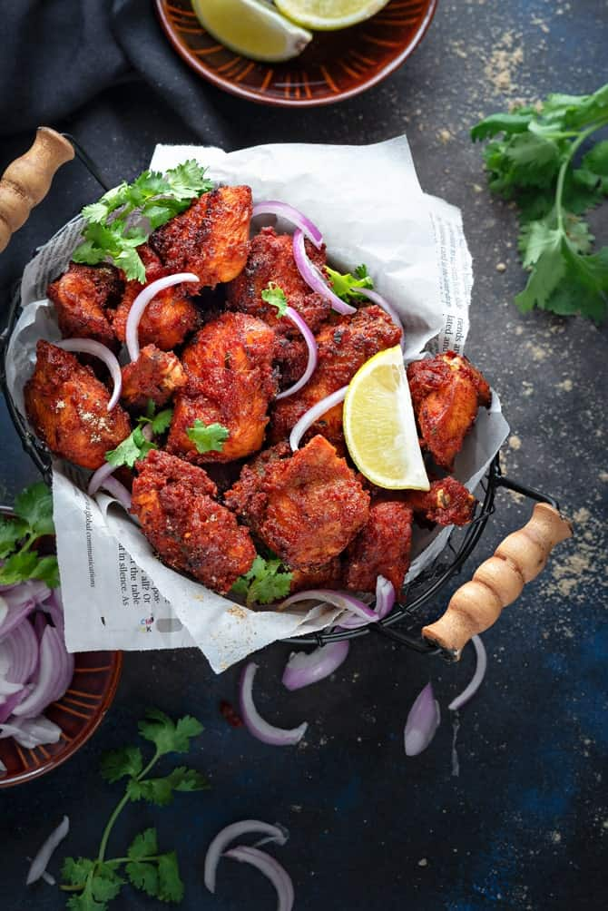
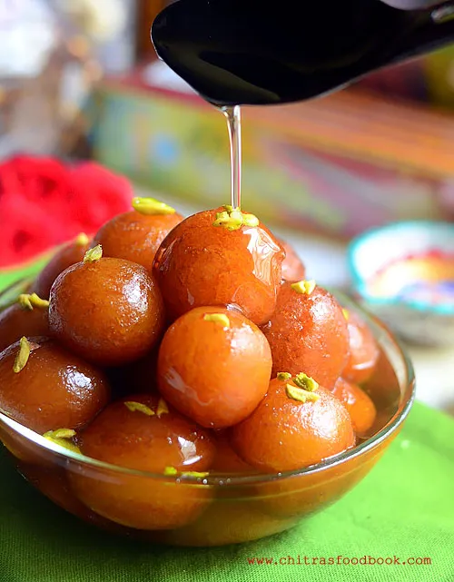
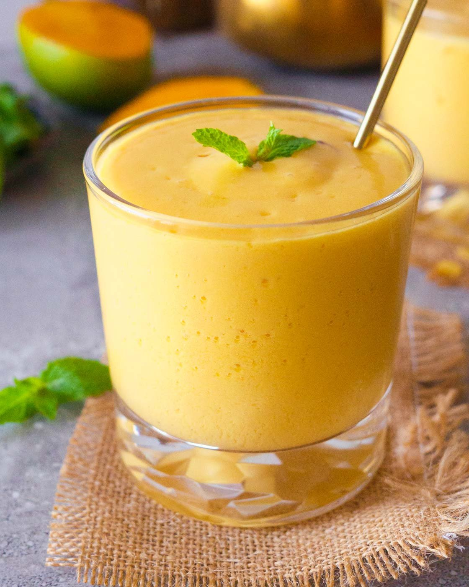

LILLY's Kitchen
Hello Everyone.This is V.LIlly Grace Dorucs.
Today I am gonna share my recipes.
The recipes I'm sharing with you are,
Recipe 1: CHICKEN FRY.

List of products:
- Chicken 500gms(boneless)
- Ginger Garlic Paste
- INDIAN Masalas
- Rice Flour and All-Purpose Flour
- Oil
- Indian Masalas,
- There are so many masalas in India.For a perfect marination,Mix these things.
| S1.No |
Product Name |
Quantity |
| 1 |
Garam Masala |
3 table spoons |
| 2 |
Chill Powder |
2 Table spoons |
| 3 |
Coriander poweder |
2 Table Spoons |
| 4 |
Curd |
4 Table Spoons |
| 4 |
Tumeric Powder |
2s Tabel Spoons |
After making this marination mixture and add salt for taste and squeese lemon juice with no seeds in it.
Procedure:
- Take garlic, ginger and curry leaves in a blender.
- Grind to a coarse puree without adding water.
- Take chilli powder, coriander powder, cumin powder, pepper powder, garam masala powder, turmeric powder and salt in a bowl.
- Add the ground garlic and curry leaves puree.
- Add lemon juice,Add all purpose flour.
- Add in rice flour,Mix well.
- Add in water,Make it into a thick paste.
- Add in chicken cubes and Mix well.
- Mix well and leave this to marinate for 1 to 2 hours
- After 2 hours,Deep fry the chicken cubes in hot oil.Cook until the chicken cubes turn into golden brown colour.
- Drain the cubes from the oil.
- Serve the chicken fry with onions.
This is how I make my Chicken Fry. Hope you liked it.
Recipe 2:GULAB JAMMUN.
Now this is my second recipe.

Essentials Needed:
| S.NO: |
Ingredients |
| 1 |
Gulab Jammun Powder |
| 2 |
Sugar(1kg) |
| 3 |
Elachi |
| 4 |
Oil |
| 5 |
Ghee |
Preparation:
- First take the Gulab Jammun powder and add water to it.
Mix until the powder & water turns into a dough.
- Now from thw dough,make balls from it with the whole dough.
- Take a vessel and 5 cups of water to it.
Now start to add sugar to it and start strring with a spatulla.
Now stir the mixture of water and sugar until it turns into golden brown colour.
- Take another vesel and add oil.
Let it heat.
- Now take the balls of gulab jammuns and deep fry the balls in the oil until those balls turns into golden brown.
Make sure that those balls are completly fried from inside.
- When the balls gets cooled,add them to the sugar syrup which you have prepared.
- Let the mixture of balls and sugar syrup sit in the refridgerator.
This is how to make Gulab Jammun at home.
Recipe 3:"Mango Lassi".
Mango Lassi is a delicious,cooling and refreshing beverage that can help correct liver,as well as poor eyesight.
The yogurt in this recipe helps balance the acidity of the mango to aid in digestion.

Ingredients:
| S.no |
Items |
| 1. |
2 cups homemade yogurt |
| 2. |
2 medium ripe mangoes |
| 3. |
3 Tbsp maple syrup or honey |
| 4. |
6 Ice Cubes |
| 5. |
1/8 tsp rose water |
| 6. |
Cinnamon Powder |
Preparation:
- Take 2 medium ripe mangoes and cool them for 15-30 mins in the refridgerator.
- After refridgerating the mangoes,take them out and peel and make slices of the mangoes.
- Now take a blender and add "2cups of homemade yogurt,the slices of mangoes,3Tbsp maple syrup,6 Ice cubes.
- Now blend the ingredients until the mango slices are smoothly blended.
- Now add 1/8 tsp rose water into the blender and give it a nice blend again.
- After blending it,We'll be having our mango lassi.
- Now take mango lassi in to a glass and add some Cinnamon Powder on top the mango lassi.
This is how to make Mango Lassi in my way😉.
Try this recipe in your house.After a long tried day,this is the best refreshment.
Hope you guys liked it.
V.Lilly Grace Dorcus